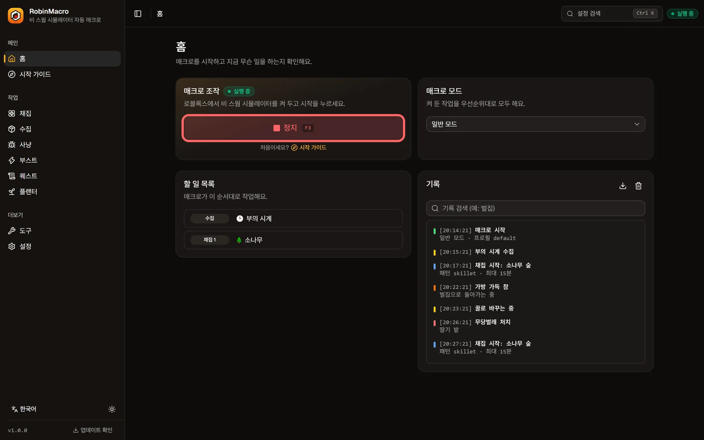
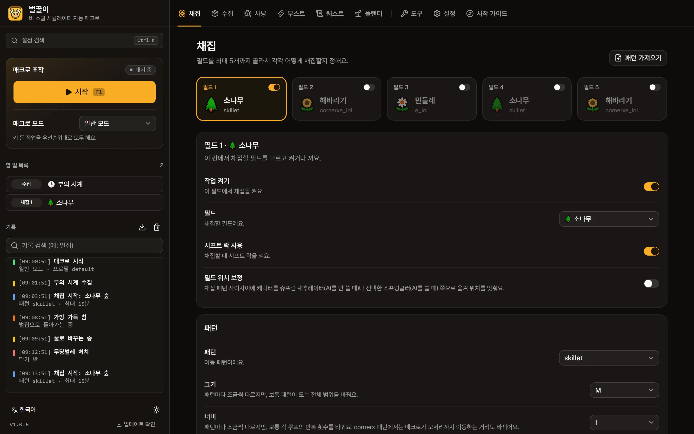
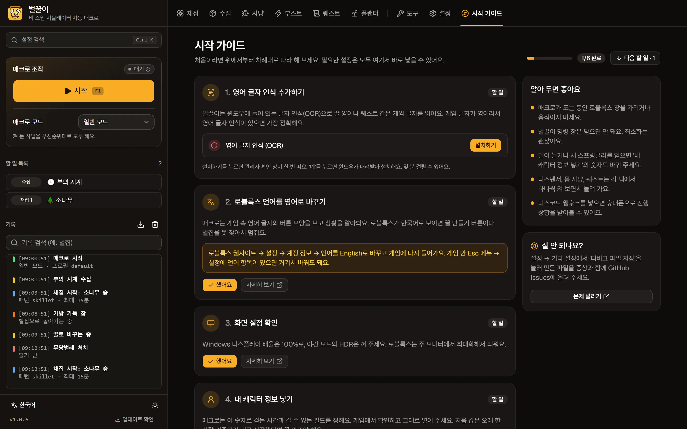
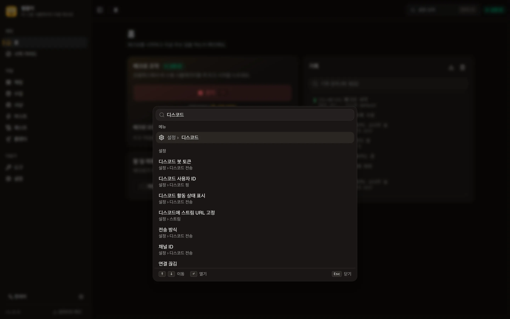

패턴대로 채집하고, 가방이 차면 꿀로
최대 5개 필드를 번갈아 돌며 정해진 패턴으로 꽃가루를 모아요. 가방이 차면 벌집으로 돌아가 꿀로 바꾸고 다시 출발해요. AI 토큰 채집도 지원해요.
맥용 비 스웜 시뮬레이터 자동 매크로. 터미널에 한 줄만 붙여넣으면 설치되고, 한국어 화면에서 클릭 몇 번이면 채집·수집·사냥·퀘스트까지 알아서 해요.
curl -fsSL https://raw.githubusercontent.com/Yoon-robin/RobinMacro/main/install.sh | bash

필드를 고르고 시작을 누르면 끝. 채집부터 꿀 바꾸기, 수집, 몹 사냥, 퀘스트, 플랜터까지 RobinMacro가 순서대로 챙겨요.
최대 5개 필드를 번갈아 돌며 정해진 패턴으로 꽃가루를 모아요. 가방이 차면 벌집으로 돌아가 꿀로 바꾸고 다시 출발해요. AI 토큰 채집도 지원해요.
⌘K를 누르고 "벌집"이라고 치면 그 설정으로 바로 이동해요. 초성(ㅂㅈ)도 돼요.
디스코드 알림, 시간별 리포트, 원격 조작 봇, 화면 스트리밍까지.
수동 사이클이나 넥타 우선순위 자동 모드. 수확 시간은 홈에서 한눈에.
메뉴, 설명, 설치 안내까지 전부 한국어. 영어로도 바로 바꿀 수 있고, 다크·라이트 테마도 있어요.
React와 shadcn/ui로 새로 만든 화면. 처음 켜면 시작 가이드가 차근차근 알려 줘요.



터미널을 열고 설치 명령을 붙여넣어요. 나머지는 설치 프로그램이 한국어로 안내해요.
손쉬운 사용과 화면 기록에 터미널을 켜요. 앱이 켜졌는지 초록 체크로 확인해 줘요.
로블록스에서 비 스웜에 들어가 필드를 고르고 시작. 이제 쉬어도 돼요.
curl -fsSL https://raw.githubusercontent.com/Yoon-robin/RobinMacro/main/install.sh | bash
rm -rf ~/robin-macro-env 를 실행한 뒤 설치 명령을 다시 붙여넣으세요.